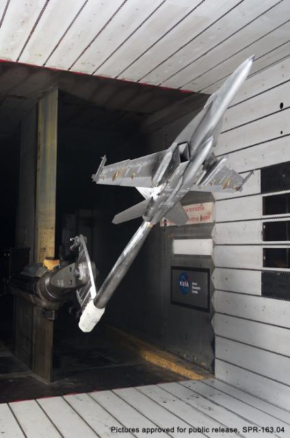

Wind Tunnels and CFD
To many observers the rivalry between wind tunnels and Computational Fluid Dynamics (CFD) is a zero-sum game - as CFD matures it simply replaces wind tunnels. However, this is far from the truth. Often you'll find wind tunnels and CFD used together in a symbiotic process where one technique fills in knowledge gaps left by the other.
Boeing F/A-18 Hornet Wind Tunnel ModelImage courtesy of NASA Ames
For example, as well as having the latest CFD software running on some of the world's most powerful computers, most Formula 1 (F1) teams also either have their own, or have access to, state-of-the-art wind tunnels. The same is true of NASA and most large aerospace companies, such as Lockheed Martin and BAE Systems. In most cases the wind tunnels are kept busy round the clock - clearly no sign here that CFD has displaced wind tunnels.
Wind Tunnels
The wind tunnel has played a leading role in aerodynamic performance analysis since the first days of powered flight when the Wright brothers used a wind tunnel to evaluate the lift and drag of their airfoil profiles. A wind tunnel simulates the movement of an object (e.g., an aircraft or a car) through air by placing a stationary scale model of the object within a duct and either blowing or sucking air through the duct. Mounting the model on a force balance allows measurement of forces, such as drag and lift or downforce, as the air interacts with the scale model.
In the latest automated wind tunnels the force results for an alpha sweep (varying the angle of the aircraft relative to the oncoming air flow) can be rapidly accumulated in a matter of seconds, much faster than it would take a typical CFD method to produce the same results.
By selecting a special combination of air flow (speed, viscosity and density) and model (scale) parameters, the non-dimensional force results (e.g., lift and drag coefficients) obtained for the scale model in the wind tunnel will mimic those of its full size equivalent moving in still air. For this flow mimicry to be accurate, the Reynolds number of the scale model and that of the full size model should ideally be the same, but at worst the Reynolds number needs to be close enough to ensure the same air flow characteristics, e.g., both models experience turbulent rather than laminar flow. Herein lies one of the key weaknesses of wind tunnels, in that if the Reynolds numbers aren't equivalent then the flow characteristics, and force measurements will be wrong.
The walls of the test section (duct) in a wind tunnel influence the results obtained for the scale model. This effect can be acute and invalidate results when the model's cross section is more than 10% of the overall duct's cross section. Wind tunnel wall correction factors are often cited to make the results equivalent to wall-free results.
Computational Fluid Dynamics (CFD)
CFD uses computers to simulate fluid (e.g., air and water) flow over digital models, such as those produced by Computer-Aided Design (CAD) software. The nature of the CFD analysis techniques means that full-size models can be simulated directly, avoiding the Reynolds number matching and wall problems faced when using a wind tunnel. Using CAD models means that CFD can simulate flow over virtual models without the need to make costly physical models.
CFD Simulation in Caedium
So far so good - CFD sounds like a great replacement for the wind tunnel. However, CFD makes assumptions and approximations in solving the governing flow equations, called the Navier-Stokes equations. In so doing the accuracy of CFD results suffers, especially relative to turbulence. Modeling turbulence in CFD is problematic - many turbulence models are tuned for specific flow regimes and are not generally applicable.
Another issue with CFD is the need for a mesh to cover the entire 3D flow domain. Generating a mesh that adequately resolves boundary layers on surfaces and yet doesn't over-resolve regions of little interest without producing degenerate elements is a non-trivial, often time-consuming, task. The inevitably large meshes necessary for complex configurations, such as F1 cars, require relatively long run times to obtain results. Once a model is manufactured and mounted in the wind tunnel, an automated alpha sweep can be orders of magnitude faster than performing a series of equivalent CFD simulations.
Once you have the results from a CFD simulation, it is relatively easy to visualize flow features throughout the flow domain and extract plots of flow variables. In contrast, extracting data (other than forces) from a wind tunnel simulation requires a priori (and often expensive) model instrumentation.
 CFD Visualization in Caedium: Iso-surfaces, Vectors & Streamlines
CFD Visualization in Caedium: Iso-surfaces, Vectors & Streamlines
Complimentary
Wind tunnels have advanced in the period since CFD appeared (possibly in response to competition from CFD), with innovations such as:
- Pressure-Sensitive Paint (PSP), which is a match for the colorful pressure contours produced by CFD visualization
- Particle Image Velocimetry (PIV), which allows wind tunnels to produce non-intrusive velocity field visualization, mimicking those from CFD
- Rapid manufacturing techniques, such as stereolithography (using the same CAD geometry that feeds CFD) making wind tunnel model construction faster and cheaper - making it more competitive with CFD model generation
Often the pairing of wind tunnels and CFD simulations can be used to gain advantage, such as:
- Using wind tunnel data to validate CFD for a specific application
- Wind tunnels can perform detailed investigations into CFD anomalies and vice versa
- CFD can calculate wind tunnel wall correction factors
- Using CFD to narrow down design constraints and parameters for further detailed analysis in wind tunnel tests
- CFD can identify important flow regions to study further in wind tunnel tests using instrumented models
Clearly wind tunnels and CFD simulations are not a zero-sum game; in fact they make a formidable combination, just ask the motor racing and aerospace industries.
Feedback
Questions? Ideas? Problems?

Recent blog posts
- CFD Simulates Distant Past
- Background on the Caedium v6.0 Release
- Long-Necked Dinosaurs Succumb To CFD
- CFD Provides Insight Into Mystery Fossils
- Wind Turbine Design According to Insects
- Runners Discover Drafting
- Wind Tunnel and CFD Reveal Best Cycling Tuck
- Active Aerodynamics on the Lamborghini Huracán Performante
- Fluidic Logic
- Stonehenge Vortex Revealed as April Fools' Day Distortion Field
 Get our Blog feed
Get our Blog feed